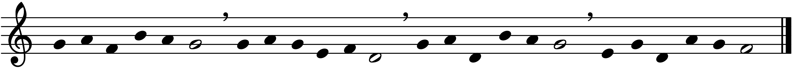
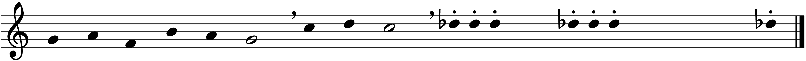
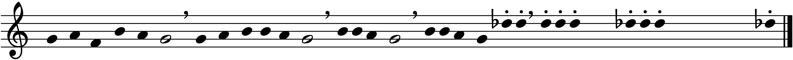

Livello 0
Cos'è un “compositore” per voi?
- Chi è un compositore secondo voi?
- Conoscete il nome di un compositore di oggi?
- Un compositore scrive solo “musica classica”?
Cos'è stato il “compositore” nel passato?
- Compositore - artigiano: lavora per la chiesa o per la corte
- Compositore come genio individuale: firma le opere, costituisce uno stile
- Compositore moderno: inventore di suoni e di processi, dialoga con la scienza
Cos'è un “compositore” oggi?
- Non scrive solo musica assoluta: cinema, videogame, installazioni, danza
- “scrive” anche “senza scrivere”
- Può usare strumenti digitali (DAW, AI, strumenti elettronici in genere)
- Può portare avanti azioni di divulgazione
La dimensione del concerto

Introduzione
La "nuova musica"
- La "nuova musica" come esperienza, non etichetta
- Ascolto, immaginazione, critica
- Una musica che ridefinisce il suono stesso
Criteri analitico-organizzativi elementari
Secondo Boris Porena, la musica può essere analizzata e progettata a partire da pochi semplici criteri ricorrenti, presenti in culture ed epoche diverse. Questi criteri sono strumenti didattici fondamentali per sviluppare consapevolezza compositiva.
Due oggetti musicali si dicono identici se tali sono tutti gli elementi che li compongono e identico è il loro ordinamento.

Similitudine geometrica, identità parziale, similitudine gestaltica.
Opposizione sistematica, opposizione gestaltica.
Tra due elementi A e B è possibile riscontrare o inserire contestualmente una serie di elementi (gradi) tali che la differenza tra due qualunque di essi sia sempre minore della differenza tra A e B.
Per ogni elemento della serie precedente è possibile trovarne un altro tale che la differenza tra i due sia minore di un valore piccolo a piacere.
- Segmentazione: si possono identificare delle unità discrete (segmenti)
- Addizione: un oggetto complesso può essere analizzato come somma dei suoi costituenti (segmenti)
- Integrazione: interdipendenza tra la posizione di un costituente e la sua funzione in rapporto al tutto
- Costituzione di livelli/Equivalenza
Questi criteri possono essere riconosciuti sia nell’analisi musicale che utilizzati per costruire esercizi creativi semplici, adatti a tutti i livelli.
Contesto storico: crisi della forma
- Mahler, Debussy, Strauss: oltre la tonalità
- Rottura delle forme tradizionali
- Espressività e tensione come motore del cambiamento
Ascolti consigliati
Mahler – Sinfonia n.9, I mov.
Seconda Scuola di Vienna
- Schoenberg: la tecnica dei 12 suoni
- Webern: essenzialità e frammento
- Berg: dramma e lirismo
Ascolto consigliato
Webern – Sinfonia op. 21
Ascolto consigliato
Schoenberg – Farben
Dopo la guerra
- Serialismo integrale: Boulez, Stockhausen
- Indeterminazione: John Cage
- Il silenzio come gesto musicale
Boulez – Structures
Cage – 4’33”
Musica ed elettronica
- Musica concreta (Schaeffer)
- Musica elettronica (Stockhausen)
- Nuove tecnologie = nuovo linguaggio
Schaeffer – Étude aux chemins de fer
Berio – Visage
Pluralismo e postmodernità
- Spettralismo: suono come materia fisica
- Minimalismo: processi e ripetizione
- Postmodernismo: ibridazione, frammento
Grisey – Partiels
Reich – Music for 18 Musicians
Franco Donatoni - Lumen
Spunti di riflessione
- Che ruolo ha il silenzio nella musica?
- È possibile ascoltare 4’33” come un vero brano?
- Se tutto è suono, cosa distingue la musica?
- Che senso ha oggi parlare di "contemporaneo"?
Il corpo e la voce nella musica del presente
Nella musica contemporanea il corpo non è solo veicolo esecutivo, ma spesso diventa soggetto stesso della composizione. Gesti, respiri, movimenti sono integrati nel pensiero musicale.
La voce, estesa oltre il canto, si apre a possibilità espressive nuove: sussurri, urla, rumori, fonemi “privi di senso”.
- Georges Aperghis – Récitations
- Meredith Monk – Dolmen Music
- Luciano Berio – Sequenza III
Musica e spazio
Il suono non è più un’entità astratta, ma uno spazio fisico da esplorare: la disposizione degli esecutori, l’uso della tecnologia, il movimento della fonte sonora diventano parte della composizione.
- Luigi Nono – Prometeo
- Stockhausen – Gruppen
- Alvin Lucier – I Am Sitting in a Room
Il suono e la tecnologia
L’evoluzione tecnologica ha permesso nuove forme di interazione: strumenti aumentati, sensori, algoritmi generativi, intelligenze artificiali. Il compositore diventa spesso anche programmatore, performer, progettista.
- Michel Waisvisz – The Hands
- Alexander Schubert – Convergence